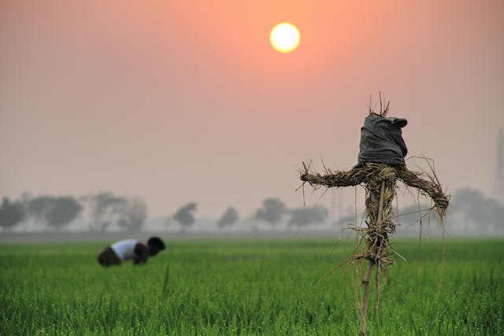

Study Bangladesh
Its full name is The People's Republic of Bangladesh. The capital and the largest city is Dhaka (formerly "Dacca"). Bangladesh is surrounded on three sides by the Republic of India (Bharat), and Myanmar (Burma) on the south-eastern corner.

A Bangladeshi man work in field
District of Bangladesh
1.Panchaghar
During the regime of the British Raj, Panchagarh was part of the Jalpaiguri district of undivided Bengal. In 1911, Jalpaiguri was fully established as a thana. At that time, the headquarters of Jalpaiguri thana was situated in Jagdal upazila of the current Panchagarh district.
Map
Blog
2.Thakurgaon
During British rule Thakurgaon was a tehsil (a district subdivision). In 1947 at the time of the Partition of India, Thakurgaon Subdivision became part of the newly established Dinajpur District of East Bengal. In 1984 Thakurgaon subdivision was split off Dinajpur and became a separate district
Map
Blog